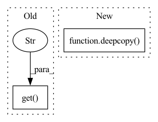

Pattern ID :9940
Before Change
// As the VecEnv resets automatically, new_obs is already the
// first observation of the next episode
if done and infos[0].get("terminal_observation" ) is not None:
next_obs = infos[0]["terminal_observation"]
// VecNormalize normalizes the terminal observation
if self._vec_normalize_env is not None:After Change
self._last_original_obs, new_obs_, reward_ = self._last_obs, new_obs, reward
// Avoid modification by reference
next_obs = deepcopy( new_obs_)
// As the VecEnv resets automatically, new_obs is already the
// first observation of the next episode
for i, done in enumerate(dones):
if done and infos[i].get("terminal_observation") is not None:In pattern: SUPERPATTERN
Frequency: 3
Non-data size: 2
Instances Fragment ID: 35586399
Project Name: dlr-rm/stable-baselines3
Commit Name: 507ed1762e62bd6c4e85ea572ba166b69116b1ac
Time: 2021-12-01
Author: antonin.raffin@ensta.org
File Name: stable_baselines3/common/off_policy_algorithm.py
M Class Name: OffPolicyAlgorithm
N Class Name: OffPolicyAlgorithm
M Method Name: _store_transition(7)
N Method Name: _store_transition(7)
M Parent Class: BaseAlgorithm
N Parent Class: BaseAlgorithm
M File Name: stable_baselines3/common/off_policy_algorithm.py
N File Name: stable_baselines3/common/off_policy_algorithm.py
M Start Line: 462
M End Line: 498
N Start Line: 467
N End Line: 514
Before Change
distillation_loss = ((1.0 - self._hardness) * loss) + (
self._hardness * teacher_loss
)
global_step = kwargs.get("global_step" )
global_step = epoch * steps_per_epoch if global_step is None else global_step
_log_losses(self.loggers, global_step, loss, teacher_loss, distillation_loss)
return distillation_loss
After Change
else {key: student_inputs[key] for key in self._teacher_input_keys}
)
// copy to keep from updating student"s inputs
teacher_inputs = deepcopy( teacher_inputs)
if self._teacher == "self":
_LOGGER.info("Copying current models state for self distillation")
self._teacher = deepcopy(module) Fragment ID: 35586398
Project Name: neuralmagic/sparseml
Commit Name: 00add9fd9b677d966f02dd7c32060e50140dc14f
Time: 2022-02-01
Author: mark@neuralmagic.com
File Name: src/sparseml/pytorch/optim/modifier_distillation.py
M Class Name: DistillationModifier
N Class Name: DistillationModifier
M Method Name: loss_update(8)
N Method Name: loss_update(8)
M Parent Class: ScheduledUpdateModifier
N Parent Class: ScheduledModifier
M File Name: src/sparseml/pytorch/optim/modifier_distillation.py
N File Name: src/sparseml/pytorch/optim/modifier_distillation.py
M Start Line: 244
M End Line: 290
N Start Line: 260
N End Line: 327
Before Change
save_freq=-1,
save_best_only=False,
)
callbacks = [checkpoint_manager, LinearLRScheduler(params.get("learning_rate" , 5e-5) , 1e-7, n_iterations)]
if show_training:
callbacks.append(TrainingHistoryVisualizationCallback("./temp/"))
regularization = RegularizationList([After Change
logging.info(f"Checkpoint folder: {checkpoint_folder}")
save_params(params, os.path.join(checkpoint_folder, "params.pkl"))
encoder_params = deepcopy( params)
if encoder_data_folder is not None:
encoder_params["data_folder"] = encoder_data_folder
auto_encoder_training_output = train_auto_encoder(**encoder_params, verbose=verbose)
reconstruction_fig = visualize_reconstruction( Fragment ID: 35586400
Project Name: neurotorch/neurotorch
Commit Name: e1935377b39da9d0b74f9741bfb2c942a38c9437
Time: 2022-08-22
Author: 50332514+JeremieGince@users.noreply.github.com
File Name: applications/time_series_forecasting_spiking/results_generation.py
M Class Name: AnonimousClass
N Class Name: AnonimousClass
M Method Name: train_with_params(8)
N Method Name: train_with_params(7)
M Parent Class:
N Parent Class:
M File Name: applications/time_series_forecasting_spiking/results_generation.py
N File Name: applications/time_series_forecasting_spiking/results_generation.py
M Start Line: 128
M End Line: 212
N Start Line: 121
N End Line: 233